Your collection of Bing daily wallpapers
Try modifying your search terms
© maximkabb/Getty Images
📅 2026-04-05
© Glenn Waters/Getty Images
📅 2026-04-04
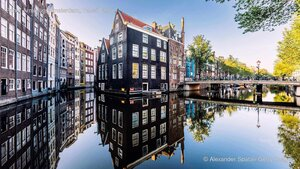
© Alexander Spatari/Getty Images
📅 2026-04-03
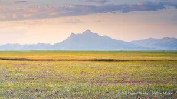
© Jeff Lewis/Tandem Stills + Motion
📅 2026-04-02
© Tetsuya Tanooka/Getty Images
📅 2026-04-01
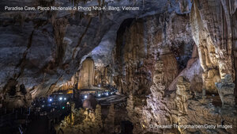
© Pakawat Thongcharoen/Getty Images
📅 2026-03-31
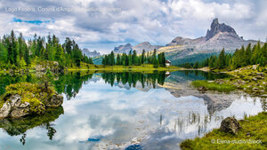
© Elena-studio/iStock
📅 2026-03-30
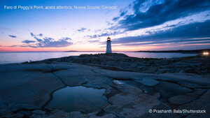
© Prashanth Bala/Shutterstock
📅 2026-03-29
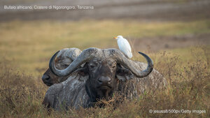
© jesuss8/500px/Getty Images
📅 2026-03-28
© Clarence Holmes Photography/Alamy
📅 2026-03-27
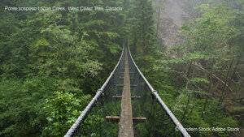
© Tandem Stock/Adobe Stock
📅 2026-03-26
© Lindrik/iStock/Getty Images Plus
📅 2026-03-25
© Zhang Qiao/VCG/Getty Images
📅 2026-03-24
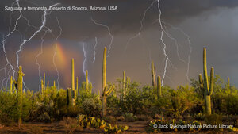
© Jack Dykinga/Nature Picture Library
📅 2026-03-23
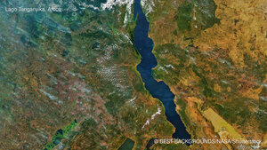
© BEST-BACKGROUNDS/NASA/Shutterstock
📅 2026-03-22
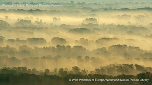
© Wild Wonders of Europe/Widstrand/Nature Picture Library
📅 2026-03-21
© klagyivik/Getty Images
📅 2026-03-20
© JasonPrince/iStock
📅 2026-03-19
© Eric Vogt/Tandem Stills + Motion
📅 2026-03-18
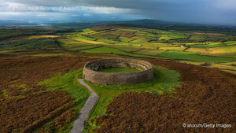
© aluxum/Getty Images
📅 2026-03-17
© Entwicklungsknecht/Getty Images
📅 2026-03-16
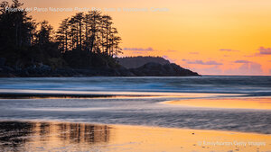
© EmilyNorton/Getty Images
📅 2026-03-15
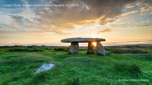
© Helen Hotson/Alamy
📅 2026-03-14
© Helmut Meyer zur Capellen/Alamy
📅 2026-03-13
© Andy Rouse/naturepl.com
📅 2026-03-12
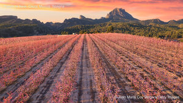
© Juan Maria Coy Vergara/Getty Images
📅 2026-03-11
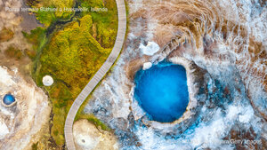
© Juan Maria Coy Vergara/Getty Images
📅 2026-03-10
© Andrew Mason/Minden Pictures
📅 2026-03-09
© d!g!tALE by Alessandro Ciabini/Moment
📅 2026-03-08
© javarman3/Getty Images
📅 2026-03-07
© Frank Bach/Alamy
📅 2026-03-06
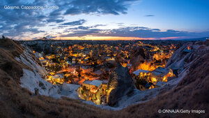
© ONNAJA/Getty Images
📅 2026-03-05
© Maya Karkalicheva/Getty Images
📅 2026-03-04
© Denis-Huot/naturepl.com
📅 2026-03-03
© KavalenkavaVolha/iStock
📅 2026-03-02
© tokar/Shutterstock
📅 2026-03-01
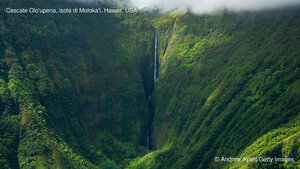
© Andrew Aylett/Getty Images
📅 2026-02-28
© Steven Kazlowski/naturepl.com
📅 2026-02-27
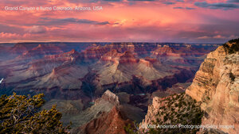
© Matt Anderson Photography/Getty Images
📅 2026-02-26
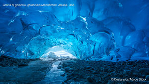
© Designpics/Adobe Stock
📅 2026-02-25
© fbxx/iStock/Getty Images
📅 2026-02-24
© Christian Vizl/Tandem Stills + Motion
📅 2026-02-23
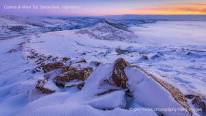
© john finney photography/Getty Images
📅 2026-02-22
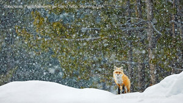
© Radomir Jakubowski/naturepl.com
📅 2026-02-21
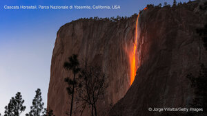
© Jorge Villalba/Getty Images
📅 2026-02-20
© Tomasz Podolski/Getty Images
📅 2026-02-19
© Nemyrivskyi Viacheslav/Getty Images
📅 2026-02-18
© Gins Wang/Getty Images
📅 2026-02-17
© reisegraf/Getty Images
📅 2026-02-16
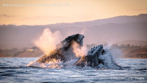
© Kiliii Fish/Cavan Images
📅 2026-02-15
© Jan Hendrik/Shutterstock/Getty Images
📅 2026-02-14
© chaiyut samsuk/Getty Images
📅 2026-02-13
© Karine Aigner/TANDEM Stills + Motion
📅 2026-02-12
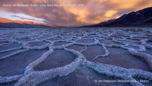
© Jim Patterson/TANDEM Stills + Motion
📅 2026-02-11
© L. Apolli/Getty Images
📅 2026-02-10
© Valeriy Maleev/naturepl.com
📅 2026-02-09
© whitewizzard/Getty Images
📅 2026-02-08
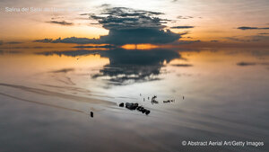
© Abstract Aerial Art/Getty Images
📅 2026-02-07
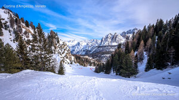
© Алексей Облов/Moment
📅 2026-02-06
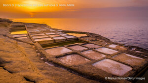
© Marius Roman/Getty Images
📅 2026-02-05
© Carl Mckie/500px/Getty Images
📅 2026-02-04
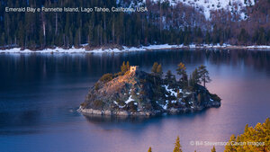
© Bill Stevenson/Cavan Images
📅 2026-02-03
© Raimund Linke/Getty Images
📅 2026-02-02
© Robert Pekar/Alamy
📅 2026-02-01
© Mogens Trolle/Shutterstock
📅 2026-01-31
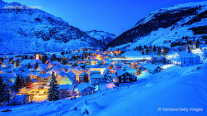
© Xantana/Getty Images
📅 2026-01-30
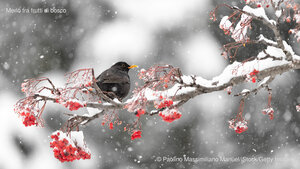
© Paolino Massimiliano Manuel/iStock/Getty Images
📅 2026-01-29
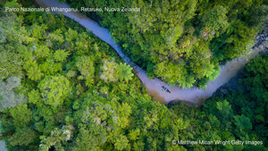
© Matthew Micah Wright/Getty Images
📅 2026-01-28
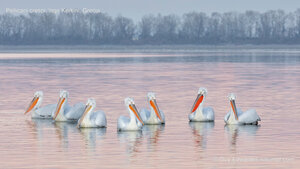
© Guy Edwardes/naturepl.com
📅 2026-01-27
© www.fredconcha.com @ All Rights Reserved/Getty Images
📅 2026-01-26
© Alister Firth/Alamy
📅 2026-01-25
© seng chye teo/Moment
📅 2026-01-24
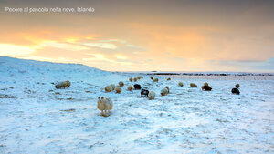
© Christophe Lehenaff/Getty Images
📅 2026-01-23
© Henryk Sadura/Getty Images
📅 2026-01-22
© Galina Jacyna/Getty Images
📅 2026-01-21
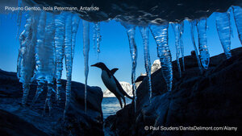
© Paul Souders/DanitaDelimont.com/Alamy
📅 2026-01-20
© Luis F Arevalo/Getty Images
📅 2026-01-19
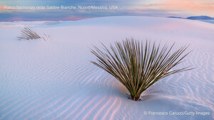
© Francesco Carucci/Getty Images
📅 2026-01-18
© Aerial_Views/E+
📅 2026-01-17
© Norbert Achtelik/Cavan Images
📅 2026-01-16
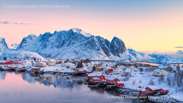
© Roberto Moiola/Cavan Images/SuperStock
📅 2026-01-15
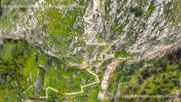
© George Pachantouris/Getty Images
📅 2026-01-14
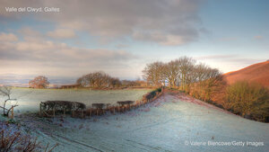
© Valerie Blencowe/Getty Images
📅 2026-01-13
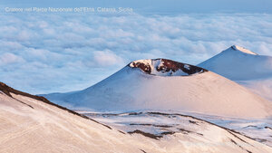
© PATMALUPHOTO/Adobe Stock
📅 2026-01-12
© AnetteAndersen/Getty Images
📅 2026-01-11
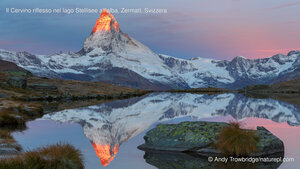
© Andy Trowbridge/naturepl.com
📅 2026-01-10
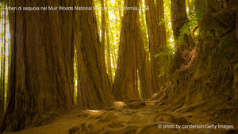
© photo by canderson/Getty Images
📅 2026-01-09
© Philip Reeve/Photodisc/Getty Images
📅 2026-01-08
© Jim Patterson/TANDEM Stills + Motion
📅 2026-01-07
© Gambarini Gianandrea/Shutterstock
📅 2026-01-06
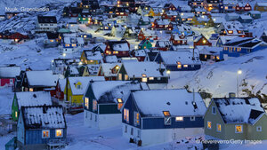
© nevereverro/Getty Images
📅 2026-01-05
© Chris Moore - Exploring Light Photography/TANDEM Stills + Motion
📅 2026-01-04
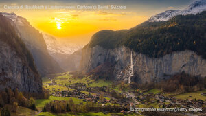
© pongnathee kluaythong/Getty Images
📅 2026-01-03
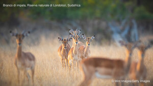
© Mint Images/Getty Images
📅 2026-01-02
© Chansak Joe/Getty Images
📅 2026-01-01
© Marco Secchi/Collaboratore/Getty Images News
📅 2025-12-31
© Martin Bailey/Shutterstock
📅 2025-12-30
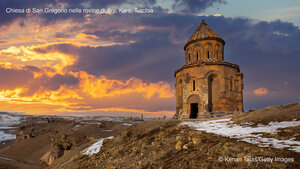
© Kenan Talas/Getty Images
📅 2025-12-29
© Cyrielle Beaubois/Getty Images
📅 2025-12-28
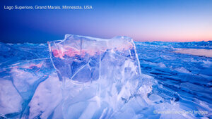
© wanderluster/Getty Images
📅 2025-12-27
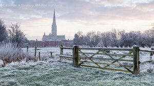
© Julian Elliott Photography/Getty Images
📅 2025-12-26
© Xantana/iStock/Getty Images Plus
📅 2025-12-25
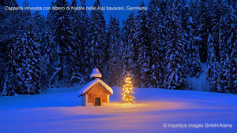
© mauritius images GmbH/Alamy
📅 2025-12-24
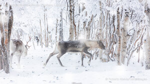
© Roberto Moiola/Getty Images
📅 2025-12-23
© Anadolu/Getty Images
📅 2025-12-22
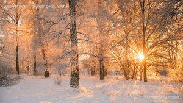
© Schon/Getty Images
📅 2025-12-21
© artas/Getty Images
📅 2025-12-20
© Roberto Moiola/Getty Images
📅 2025-12-19
© Austin Cronnelly/TANDEM Stills + Motion
📅 2025-12-18
© Michael_Conrad/Getty Images
📅 2025-12-17
© NG Images/Alamy
📅 2025-12-16
© Amith Nag Photography/Getty Images
📅 2025-12-15
© Veronika Seppanen/Shutterstock
📅 2025-12-14
© Ron and Patty Thomas/Getty Images
📅 2025-12-13
© DigiPub/Getty Images
📅 2025-12-12
© shoults/Alamy
📅 2025-12-11
© Elena Zolotova/Getty Images
📅 2025-12-10
© Sylvain Cordier/naturepl.com
📅 2025-12-09
© Dan74/Shutterstock
📅 2025-12-08
© alekseystemmer/Getty Images
📅 2025-12-07
© Troy Harrison/Getty Images
📅 2025-12-06
© diegograndi/Getty Images
📅 2025-12-05
© Andy Rouse/naturepl.com
📅 2025-12-04
© Roberto Moiola/Getty Images
📅 2025-12-03
© Patrick J. Endres/Getty Images
📅 2025-12-02
© Gabrielle/Adobe Stock
📅 2025-12-01
© Krzysztof Baranowski/Getty Images
📅 2025-11-30
© CreativeNature_nl/Getty Images
📅 2025-11-29
© ClickAlps/Alamy
📅 2025-11-28
© Tolga_TEZCAN/Getty Images
📅 2025-11-27
© cinoby/Getty Images
📅 2025-11-26
© Nico De Pasquale Photography/Getty Images
📅 2025-11-25
© ImagesofIndia/Shutterstock
📅 2025-11-24
© ThomasLENNE/Shutterstock
📅 2025-11-23
© www.anotherdayattheoffice.org/Getty Images
📅 2025-11-22
© Renzi Tommaso tommyre00@hotmail.it/Moment
📅 2025-11-21
© Valentin Flauraud/EPA-EFE/Shutterstock
📅 2025-11-20
© Alexander Spatari/Getty Images
📅 2025-11-19
© Eric Vogt/TANDEM Stills + Motion
📅 2025-11-18
© Michael Ver Sprill/Getty Images
📅 2025-11-17
© TPopova/Getty Images
📅 2025-11-16
© oneinchpunch/Shutterstock
📅 2025-11-15
© Sean Pavone/iStock/Getty Images Plus
📅 2025-11-14
© Wim van den Heever/naturepl.com
📅 2025-11-13
© Nico De Pasquale Photography/Getty Images
📅 2025-11-12
© Michael Sroka/Getty Images
📅 2025-11-11
© carlo alberto conti/Getty Images
📅 2025-11-10
© ESA/NASA
📅 2025-11-09
© Grant Ordelheide/TANDEM Stills + Motion
📅 2025-11-08
© karen crewe/Getty Images
📅 2025-11-07
© No copyright info available
📅 2025-11-06
© No copyright info available
📅 2025-11-05
© No copyright info available
📅 2025-11-04
© No copyright info available
📅 2025-11-03
© No copyright info available
📅 2025-11-02
© No copyright info available
📅 2025-11-01
© blue sky in my pocket/Getty Images
📅 2025-10-31
© f9photos/Getty Images
📅 2025-10-30
© Lukas Jonaitis/Shutterstock
📅 2025-10-29
© Kseniya_Milner/Getty Images
📅 2025-10-28
© Ignacio Yufera/FLPA/Minden Pictures
📅 2025-10-27
© scaliger/Getty Images
📅 2025-10-26
© romikatarina/Shutterstock
📅 2025-10-25
© Matthew H Irvin/Getty Images
📅 2025-10-24
© Oriol Alamany/naturepl.com
📅 2025-10-23
© EvaL Miko/Shutterstock
📅 2025-10-22
© EyeEm Mobile GmbH/Getty Images
📅 2025-10-21
© ValerioMei/iStock/Getty Images Plus
📅 2025-10-20
© Tammi Mild/Getty Images
📅 2025-10-19
© dbstockphoto/Getty Images
📅 2025-10-18
© Matt Anderson Photography/Getty Images
📅 2025-10-17
© Mario Plechaty Photograph/Shutterstock
📅 2025-10-16
© RilindH/RooM
📅 2025-10-15
© f9photos/Getty Images
📅 2025-10-14
© EyeEm Mobile GmbH/Getty Images
📅 2025-10-13
© DenisTangneyJr/Getty Images
📅 2025-10-12
© Francesco Bergamaschi/Getty Images
📅 2025-10-11
© David Wall/SuperStock
📅 2025-10-10
© NASA
📅 2025-10-09
© Dave Fleetham/plainpicture
📅 2025-10-08
© Grant Ordelheide/TANDEM Stills + Motion
📅 2025-10-07
© Danita Delimont/Shutterstock
📅 2025-10-06
© Ondrej Prosicky/Alamy
📅 2025-10-05
© NASA
📅 2025-10-04
© Adam Mowery/TANDEM Stills + Motion
📅 2025-10-03
© ©StevanZZ/iStock
📅 2025-10-02
© Robb Hirsch/TANDEM Stills + Motion
📅 2025-10-01
© Jamie Lamb - elusive-images.co.uk/Getty Images
📅 2025-09-30
© George Pachantouris/Getty Images
📅 2025-09-29
© zpagistock/Getty Images
📅 2025-09-28
© Austin Trigg/TANDEM Stills + Motion
📅 2025-09-27
© Donald M. Jones/Minden Pictures
📅 2025-09-26
© chetansoni/Shutterstock
📅 2025-09-25
© Laura Hedien/Getty Images
📅 2025-09-24
© Juan Carlos Vindas/Getty Images
📅 2025-09-23
© Danita Delimont/Getty Images
📅 2025-09-22
© Diana Robinson Photography/Moment
📅 2025-09-21
© LOOK-foto/Alamy
📅 2025-09-20
© benedek/Getty Images
📅 2025-09-19
© Luca Reina Mafaraci/Getty Images
📅 2025-09-18
© Grant Ordelheide/TANDEM Stills + Motion
📅 2025-09-17
© Stocktrek Images/Getty Images
📅 2025-09-16
© Antonio Sementa/500px/Getty Images
📅 2025-09-15
© Chris Moore/TANDEM Stills + Motion
📅 2025-09-14
© Enrique Aguirre Aves/Getty Images
📅 2025-09-13
© Franco Banfi/Nature Picture Library
📅 2025-09-12
© Daniel Viñé Garcia/Getty Images
📅 2025-09-11
© Nick Brundle Photography/Getty Images
📅 2025-09-10
© Hugh O'Connor/Getty Images
📅 2025-09-09
© Darwin Fan/Getty Images
📅 2025-09-08
© florin1961/iStock
📅 2025-09-07
© Oscar Dominguez/TANDEM Stills + Motion
📅 2025-09-06
© EXTREME-PHOTOGRAPHER/Getty Images
📅 2025-09-05
© Cavan Images/Adobe Stock
📅 2025-09-04
© Wirestock/iStock
📅 2025-09-03
© Inge Johnsson/Alamy Stock Photo
📅 2025-09-02
© Feng Wei Photography/Getty Images
📅 2025-09-01
© Hawk Buckman/Getty Images
📅 2025-08-31
© Bachir Moukarzel/Amazing Aerial Agency
📅 2025-08-30
© AirPano LLC/Amazing Aerial Agency
📅 2025-08-29
© Markus Varesvuo/Nature Picture Library
📅 2025-08-28
© Pol Albarrán/Moment
📅 2025-08-27
© Anton Petrus/Getty Images
📅 2025-08-26
© Rebecca L. Latson/Getty Images
📅 2025-08-25
© Enrique Aguirre Aves/Getty Images
📅 2025-08-24
© Castka/Getty Images
📅 2025-08-23
© svetlana57/Getty Images
📅 2025-08-22
© Ben Hall/Nature Picture Library
📅 2025-08-21
© Marc Dozier/Getty Images
📅 2025-08-20
© Eloi_Omella/Getty Images
📅 2025-08-19
© Posnov/Getty Images
📅 2025-08-18
© Caroline Brundle Bugge/Getty Images
📅 2025-08-17
© Roberto Caucino/Shutterstock
📅 2025-08-16
© Travel Wild/iStock
📅 2025-08-15
© Roberto Moiola/Alamy
📅 2025-08-14
© Sakrapee Nopparat/Getty Images
📅 2025-08-13
© Chase Dekker/Minden Pictures
📅 2025-08-12
© Fabio Massimo Zappulla/500px/500Px Plus
📅 2025-08-11
© Tandem Stock/Adobe Stock
📅 2025-08-10
© Joppi/Getty Images
📅 2025-08-09
© Mark Meredith/Getty Images
📅 2025-08-08
© Wiltser/Getty Images
📅 2025-08-07
© nantonov/iStock/Getty Images Plus
📅 2025-08-06
© Andrew Shoemaker/DanitaDelimont.com
📅 2025-08-05
© Alex Mustard/Nature Picture Library
📅 2025-08-04
© Arsgera/Shutterstock
📅 2025-08-03
© Nicolas VINCENT/Adobe Stock
📅 2025-08-02
© MEDITERRANEAN/Getty Images
📅 2025-08-01
© Russ Bishop/DanitaDelimont.com
📅 2025-07-31
© VALENTIN FLAURAUD/EPA-EFE/Shutterstock
📅 2025-07-30
© Axel Gomille/Nature Picture Library
📅 2025-07-29
© Michel Arnault/Shutterstock
📅 2025-07-28
© Javier Cosio/iStock
📅 2025-07-27
© Boonchet Ch./Getty Images
📅 2025-07-26
© Marco Bottigelli/Getty Images
📅 2025-07-25
© Captain Skyhigh/Getty Images
📅 2025-07-24
© Xantana/iStock/Getty Images Plus
📅 2025-07-23
© Petr Bednarik/Danita Delimont/Alamy Stock Photo
📅 2025-07-22
© blue-sea.cz/Shutterstock
📅 2025-07-21
© Sergey Kuznetsov/Getty Images
📅 2025-07-20
© Rolf Nussbaumer/Nature Picture Library
📅 2025-07-19
© jamenpercy/Getty Images
📅 2025-07-18
© zpagistock/Getty Images
📅 2025-07-17
© Ratnakorn Piyasirisorost/Getty Images
📅 2025-07-16
© Wirestock Creators/Shutterstock
📅 2025-07-15
© Sean Pavone/iStock/Getty Images Plus
📅 2025-07-14
© Arterra Picture Library/Alamy Stock Photo
📅 2025-07-13
© Gallo Images/DanitaDelimont.com
📅 2025-07-12
© pongnathee kluaythong/Getty Images
📅 2025-07-11
© BlueOrange Studio/Adobe Stock
📅 2025-07-10
© Grafissimo/Getty Images
📅 2025-07-09
© Kalyakan/Adobe Stock
📅 2025-07-08
© Richard Shucksmith/Minden Pictures
📅 2025-07-07
© Bryan Jolley/TANDEM Stills + Motion
📅 2025-07-06
© THOMAS SAMSON/AFP via Getty Images
📅 2025-07-05
© EyeEm Mobile GmbH/Getty Images
📅 2025-07-04
© Michel Roggo/Minden Pictures
📅 2025-07-03
© Aerial_Views/E+/Getty Images
📅 2025-07-02
© FedevPhoto/Getty Images
📅 2025-07-01
© Abstract Aerial Art/Getty Images
📅 2025-06-30
© fabio lamanna/Alamy Stock Photo
📅 2025-06-29
© Alan Schein/Getty Images
📅 2025-06-28
© Fred Bavendam/Nature Picture Library
📅 2025-06-27
© Philip Thurston/Getty Images
📅 2025-06-26
© Gavin Hellier/Getty Images
📅 2025-06-25
© mmac72/Getty Images
📅 2025-06-24
© Sean Pavone/Getty Images
📅 2025-06-23
© Mark Fox/Getty Images
📅 2025-06-22
© Tom Mackie/AWL/plainpicture
📅 2025-06-21
© RobertoGennaro/E+
📅 2025-06-20
© CaioCarvalhoPhotography/Getty Images
📅 2025-06-19
© lzh/Getty Images
📅 2025-06-18
© Chris Moore/TANDEM Stills + Motion
📅 2025-06-17
© João Vianna/Getty Images
📅 2025-06-16
© Ignacio Yufera/Minden Pictures
📅 2025-06-15
© usabin/Getty Images
📅 2025-06-14
© ARoxo/Getty Images
📅 2025-06-13
© Dean Fikar/Getty Images
📅 2025-06-12
© Karine Aigner/TANDEM Stills + Motion
📅 2025-06-11
© elxeneize/iStock/Getty Images Plus
📅 2025-06-10
© bluejayphoto/Getty Images
📅 2025-06-09
© Steve Woods Photography/Getty Images
📅 2025-06-08
© Matthew Kuhns/TANDEM Stills + Motion
📅 2025-06-07
© Horia Merla/Getty Images
📅 2025-06-06
© FEDERICO PARRA/AFP via Getty Images
📅 2025-06-05
© guenterguni/Getty Images
📅 2025-06-04
© George Pachantouris/Getty Images
📅 2025-06-03
© canbedone/iStock/Getty Images Plus
📅 2025-06-02
© Karsten Wrobel/Getty Images
📅 2025-06-01
© Sven Halling/DEEPOL/plainpicture
📅 2025-05-31
© GreenStock/Getty Images
📅 2025-05-30
© Eloi_Omella/Getty Images
📅 2025-05-29
© Gerry Ellis/Minden Pictures
📅 2025-05-28
© Abstract Aerial Art/DigitalVision
📅 2025-05-27
© Jeffrey Lewis/TANDEM Stills + Motion
📅 2025-05-26
© 2009fotofriends/Shutterstock
📅 2025-05-25
© Marisa Estivill/Shutterstock
📅 2025-05-24
© Westend61/Getty Images
📅 2025-05-23
© Framalicious/Shutterstock
📅 2025-05-22
© feng xu/Getty Images
📅 2025-05-21
© Anthony Brown/Alamy Stock Photo
📅 2025-05-20
© Jan Wlodarczyk/Alamy Stock Photo
📅 2025-05-19
© BERTRAND GUAY/AFP via Getty Images
📅 2025-05-18
© Dimitri Weber/Amazing Aerial Agency
📅 2025-05-17
© Alvin Huang/Getty Images
📅 2025-05-16
© Suzi Eszterhas/Minden Pictures
📅 2025-05-15
© Marco Bottigelli/Getty Images
📅 2025-05-14
© Marco Bottigelli/Getty Images
📅 2025-05-13
© M.Arai/Getty Images
📅 2025-05-12
© Marcus Siebert/imageBROKER
📅 2025-05-11
© lavin photography/Getty Images
📅 2025-05-10
© Tim de Waele/Getty Images
📅 2025-05-09
© Moelyn Photos/Getty Images
📅 2025-05-08
© DieterMeyrl/Getty Images
📅 2025-05-07
© Burt Johnson/Alamy Stock Photo
📅 2025-05-06
© Feng Wei Photography/Getty Images
📅 2025-05-05
© Horia Merla/Getty Images
📅 2025-05-04
© Adventure_Photo/Getty Images
📅 2025-05-03
© Gerald Corsi/Getty Images
📅 2025-05-02
© Miranda Jans/Getty Images
📅 2025-05-01
© Popperfoto/Getty Images
📅 2025-04-30
© Mint Images/Getty Images
📅 2025-04-29
© AlagnaMarco/Getty Images
📅 2025-04-28
© Bob Pool/Getty Images
📅 2025-04-27
© Maurice Prokaziuk/Getty Images
📅 2025-04-26
© imageBROKER/Matthias Graben/Getty Images
📅 2025-04-25
© Wander Photography/Getty Images
📅 2025-04-24
© Peter Dazeley/Getty Images
📅 2025-04-23
© Ajith Kumar/Getty Images
📅 2025-04-22
© Ivoha/Alamy Stock Photo
📅 2025-04-21
© Fiona McAllister Photography/Getty Images
📅 2025-04-20
© Simon Dannhauer/Getty Images
📅 2025-04-19
© Anton Petrus/Getty Images
📅 2025-04-18
© Wim Wiskerke/Alamy Stock Photo
📅 2025-04-17
© Tupungato/Getty Images
📅 2025-04-16
© Hemis/Alamy Stock Photo
📅 2025-04-15
© Jordi Chias/Minden Pictures
📅 2025-04-14
© Ratnakorn Piyasirisorost/Getty Images
📅 2025-04-13
© NASA
📅 2025-04-12
© 1111IESPDJ/Getty Images
📅 2025-04-11
© WildMedia/Shutterstock
📅 2025-04-10
© Sizun Eye/Getty Images
📅 2025-04-09
© Westend61/Getty Images
📅 2025-04-08
© Enrique Aguirre Aves/Getty Images
📅 2025-04-07
© Anton Aleksenko/iStock/Getty Images Plus
📅 2025-04-06
© Eloi_Omella/Getty Images
📅 2025-04-05
© f11photo/Getty Images
📅 2025-04-04
© Frank Staub/Getty Images
📅 2025-04-03
© Chris Moore/TANDEM Stills + Motion
📅 2025-04-02
© Ondrej Prosicky/Shutterstock
📅 2025-04-01
© Feng Wei Photography/Getty Images
📅 2025-03-31
© Alberto Masnovo/Alamy Stock Photo
📅 2025-03-30
© Robb Hirsch/TANDEM Stills + Motion
📅 2025-03-29
© Christophe Courteau/Minden Pictures
📅 2025-03-28
© f11photo/Getty Images
📅 2025-03-27
© Stephen Frink/Getty Images
📅 2025-03-26
© Kim Petersen/Alamy
📅 2025-03-25
© RudyBalasko/Getty Images
📅 2025-03-24
© john finney photography/Getty Images
📅 2025-03-23
© Franco Banfi/NPL/Minden
📅 2025-03-22
© Nick Garbutt/Alamy
📅 2025-03-21
© Fabio Muzzi/Connect Images/Alamy Stock Photo
📅 2025-03-20
© Paul Souders/Minden PIctures
📅 2025-03-19
© Jim Ekstrand/Alamy Stock Photo
📅 2025-03-18
© Colm Keating/Tandem Stills + Motion
📅 2025-03-17
© Cheryl Schneider/Alamy Stock Photo
📅 2025-03-16
© Nico De Pasquale Photography/Getty Images
📅 2025-03-15
© David Herraez Calzada/plainpicture
📅 2025-03-14
© powerofforever/Getty Images
📅 2025-03-13
© StockPhotoAstur/Shutterstock
📅 2025-03-12
© joakimbkk/Getty Images
📅 2025-03-11
© Gunter Nuyts/Getty Images
📅 2025-03-10
© Fabio Lamanna/Getty Images
📅 2025-03-09
© JOHANNES EISELE/AFP via Getty Images
📅 2025-03-08
© zhikun sun/Getty Images
📅 2025-03-07
© Amith Nag Photography/Getty Images
📅 2025-03-06
© Peetatham Kongkapech/Getty Images
📅 2025-03-05
© SeanPavonePhoto/Getty Images
📅 2025-03-04
© Richard Du Toit/Minden Pictures
📅 2025-03-03